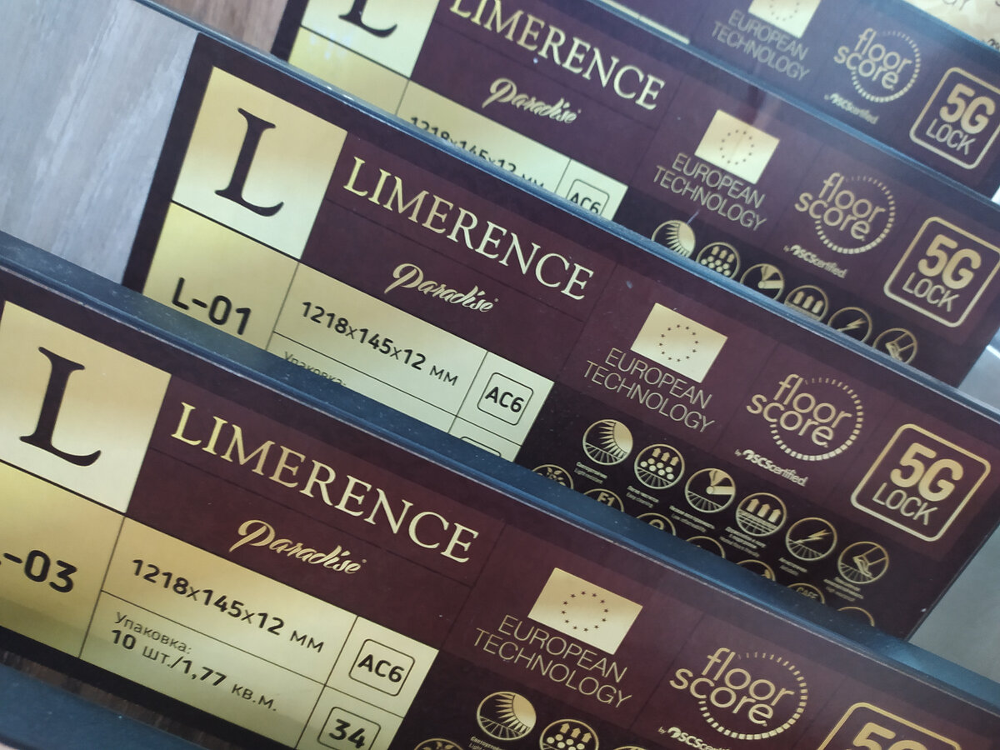
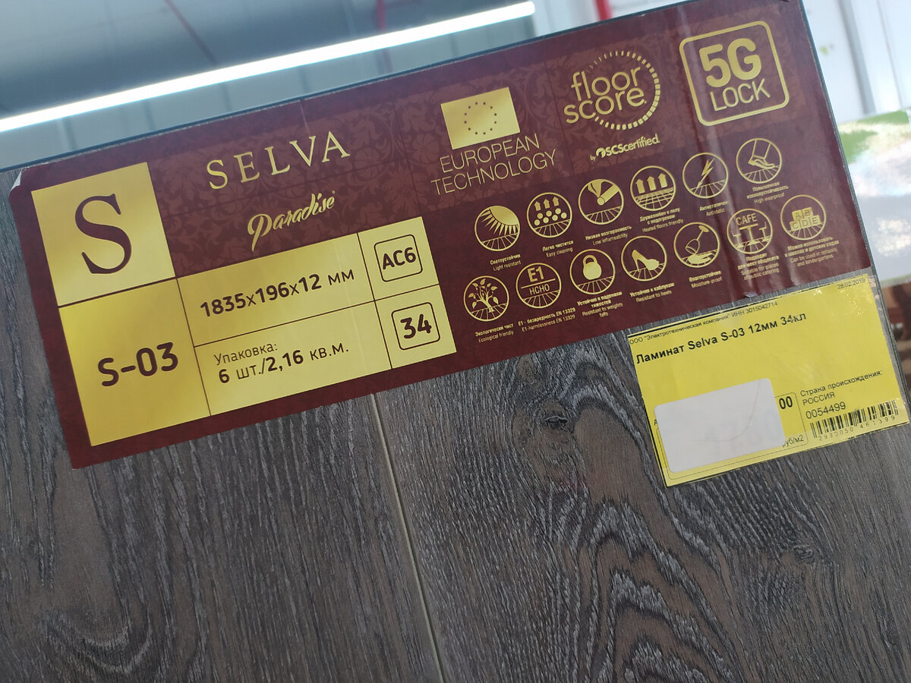
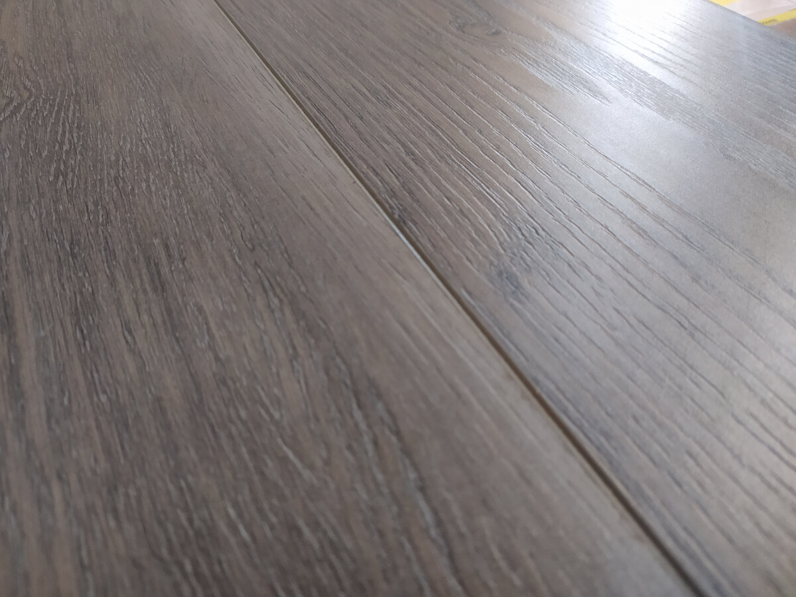
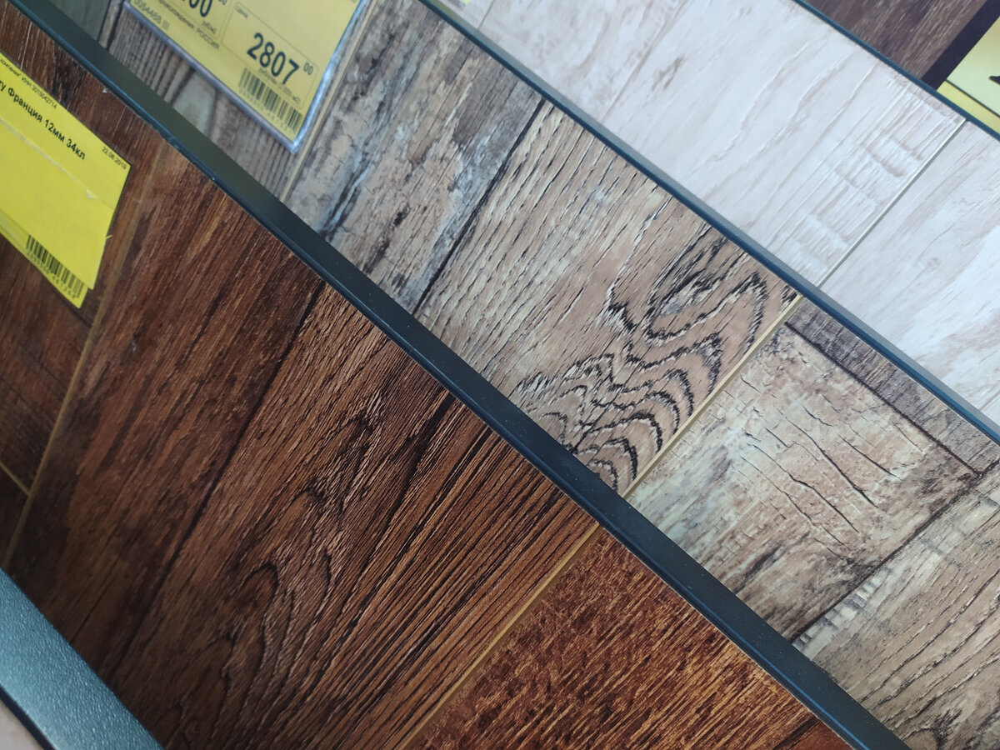
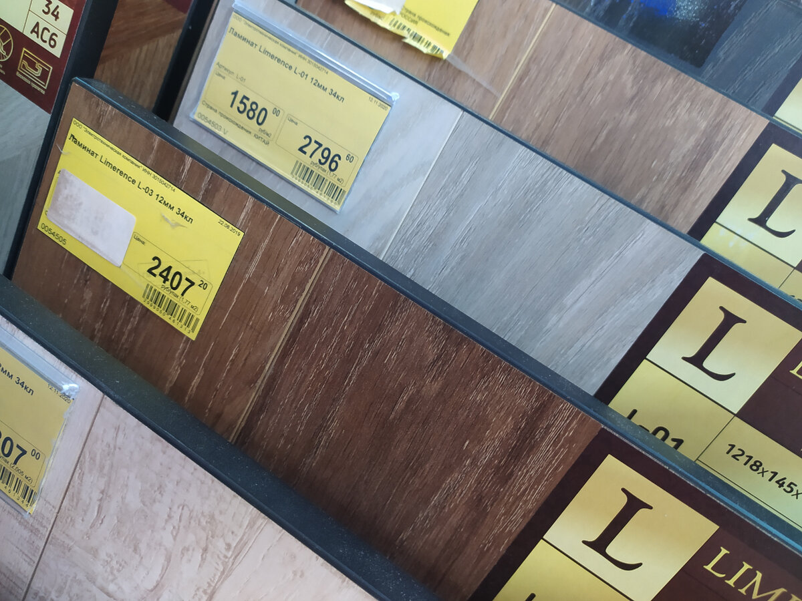
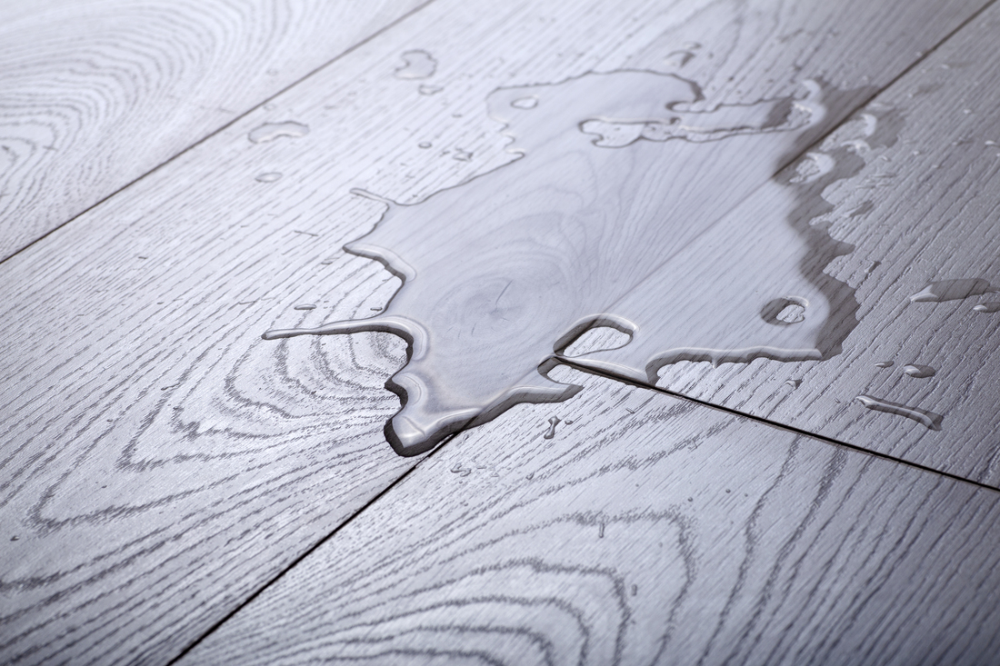

Давайте сразу оговоримся, что мы не будем сравнивать самый копеечный ламинат, который сделан даже не из опилок, а из неизвестной науке субстанции в подвале какой-нибудь китайской фабрики и стоит он рублей 370 типа по акции.
Минимальная цена на дешёвый, но качественный ламинат сегодня начинается от 790 рублей в обычных строймаркетах. Дорогой же ламинат свободно перескакивает 3,5 тысячи и это много, неоправданно много. Так насколько оправданна 5-кратная разница в цене?
Расскажу 5 вещей, о которых не расскажет ни один продавец ламината, так как после этого руководство устроит ему публичное аутодафе прямо в торговом зале.
И сейчас вы поймёте почему:

1. Для дома класс ламината не важен. Совсем. Вообще. Абсолютно.
Как только неопытный покупатель приходит в магазин отделочных материалов ему "приседают" на уши, и бережно, за руки белые, подводят к... нет, не к самому дорогому ламинату (продавцы не глупцы), а чуть пониже стоимостью. Примерно к низу верхнего сегмента. И с гордостью говорят:
- Вот она золотая середина! Вас переживёт, воды не боится, класс 33 или даже 34.
Врут злыдни!
Для домашнего использования класс ламината можно не учитывать вообще. Например, у нас в мастерской лежит качественный, но самый дешёвый ламинат 31 класса. Нагрузка на него превышает расчётную примерно в 12 раз, так как в день бывает по 120-170 человек, двигаются тяжёлые столы, стулья, падают инструменты, стекло, летит стеклянная пыль. С точки зрения продавца, ламинат продержался бы у нас год не более.
Прошло полгода, а на нём даже царапин нет! А всё только потому, что... нет, давайте на днях про это расскажу.

2. Срок службы дорогого ламината 25-30 лет, дешёвого - 2-3 года.
А вот тут вообще много интересного. Вы не задумывались что означают слова "срок службы"? Что под ними понимается?
Дело в том, что уважаемые тов. европейцы люди экономные, денежку берегут и из-за царапки или пятнышка делать нервы себе не будут. Ну откололся уголок, ну и бог с ним.
Так вот, "срок службы" ламината в Европе считается не до потери внешнего вида, эстетики, а до физического разрушения более чем 20% площади покрытия. То есть у вас должна быть разнесена в хлам пятая часть пола и только тогда якобы закончится "срок службы".
Что сказать? Умеют экономить!
У нас некоторые люди меняют полы из-за маленького скола перед входом, мотивируя:
- Ну как я буду гостям в глаза смотреть, это же все сразу увидят.
Хотя, если честно, мы все понимаем, что гостям откровенно побоку на то, какой у нас ламинат, есть у него сколы или нет.

3. Для подчёркивания дороговизны у дорогого ламината делают фаску.
Ну а как ещё показать, что человек отдал кучу денег за прессованную древесную пыль вместо нормального паркета или доски? Только фаской! В рекламе говорят, что фаска - это имитация доски, подчёркивание благородства дерева и прочее.
Никогда!
Запомните НИКОГДА не покупайте ламинат с фаской.
Во-первых, в получившихся углублениях постоянно селится мусор, а если туда попадёт что-то липкое, то мусор и пыль пропишутся там на постоянно основе.
Во-вторых, именно по углублениям вдоль листов ламината вода идёт под уклон. Так что если в одном месте будет трещина, нарушен монтаж, схалтурил мастер-отделочник - влага попадает внутрь и ламинат вздувается. Фаска очень требовательна к монтажу.

В-третьих, если у вас есть домашняя живность типа преданного собакена или кошенции, то ламинату с фаской придётся очень туго. Что собака, что кошка с рождения имеют когти, которые скользят по гладкому ламинату.
А если в ламинате есть фаски, то когти скользят по доске и упираются именно в фаску. Вся нагрузка приходится именно на эту часть, которая повреждается просто мухоментально.
У моих знакомых питбуль уделал в лохмотья дорогущий немецкий ламинат за 6 месяцев. Хозяин сидел и думал, кого пустить в расход первым, но сердце победило, животина цела, а вместо дорогого ламината постелили керамогранит.

4. Дорогой ламинат, как правило, очень проблемный в монтаже.
Оно и понятно сам по себе ламинат - это эрзац нормального деревянного пола. И перед каждым производителем стоит практически невыполнимая задача по изготовлению из коричневой субстанции конфетки. Вот они и извращаются каждый по своему: изобретают 3D или даже 5D замки, добавляют слои, изменяют схемы монтажа и прочее.
Зато потом на каждой упаковке можно с гордостью писать, что наш ламинат самый ламинатистый ламинат среди всех ламинатов и ничто не переламинатит наш ламинатистый ламинат.
Зато каждый мастер-отделочник на этих хитросделанных производителей выкладывает такое количество нецензурной лексики, что дедушка даже Шнур и Сектор Газа могли бы у них взять уроки.
Серьёзно!
Толщина ламината очень небольшая и усложнение замка приводит к его... хрупкости, а это влечёт за собой неизбежные заломы, трещины, отходы и брак. Причём даже у опытных отделочников. Дешёвый ламинат монтируется в разы легче.

5. Дорогой ламинат боится воды точно также как и дешёвый.
Да, разница есть, дорогой ламинат лучше защищён от влаги и водяных паров. У него хорошо обработан замок и воде довольно трудной попасть внутрь. Однако эту разницу в качестве и цене спокойно можно снивелировать грамотной укладкой.
Если ламинат смонтирован с проклейкой швов при помощи специального клик-сейф герметика, то разницы с дорогим ламинатом вы не увидите даже если спустите с орбиты телескоп Хаббл и посмотрите на швы своего пола. Максимум, что сможете узреть - туманность в районе батареи, но это будет тень от шторы.
Если под ламинат попала влага, то со временем вздуется любой ламинат без разницы дорогой он или дешёвый. Но, согласитесь, к потере дешёвого ламината отнестись нордически, как Штирлиц к провалу, намного легче.
Прораб мне прямо так и сказал: зачем тебе дорогой ламинат, положи дешёвый. В случае чего через 3 года поменяешь, это делается за 1 день. А над дорогим будешь трястись.
Ну, как согласны?